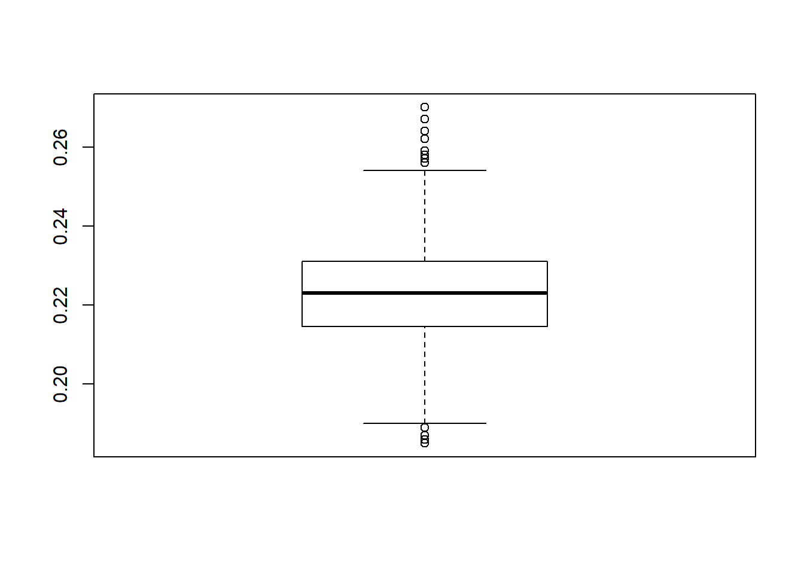
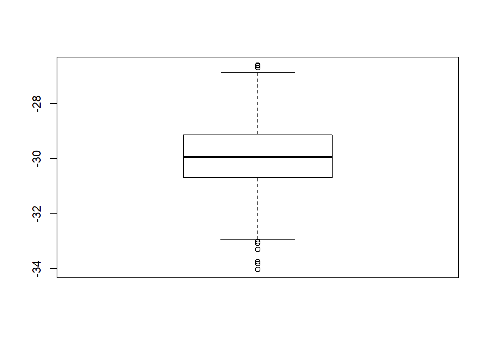

5.7 Is Annie meeting Sam?
Sleepless in Seattle is a 1993 American Romantic Comedy. Annie and Sam are supposed to meet on top of the Empire State Building where they would at last meet. However, their arrival time depends on a variety of factors and may actually not coincide and therefore never fall in love.
We make the following assumptions:
Sam and Annie arrive independently;
Sam arrives between 10 pm and 11:30 pm uniformly;
Annie arrives between 10:30 pm and midnight uniformly.
We want to answer the following questions:
What is the probability that Annie arrives before Sam?
What is the expected difference in arrival time?
If they each wait only twenty minutes after their arrival, what is the probability that they meet?
How much should they wait (assuming they wait the same amount of time), so that the probability they meet is at least 50%?
5.7.1 Question 1
- What is the probability that Annie arrives before Sam?
The following function outputs TRUE if Annie arrives before Sam and FALSE otherwise.
sam_annie1 <- function(){
sam <- runif(1,0,90)
annie <- runif(1,30,120)
annie < sam
}If we run a single simulation for instance
set.seed(2021)
sam_annie1()## [1] FALSEWe see that Annie does not arrive before Sam.
We can simply adapt sam_annie1 to use 1000 random observations and give an estimate of this probability.
sam_annie1 <- function(){
sam <- runif(1000,0,90)
annie <- runif(1000,30,120)
sum(annie < sam)/1000
}
set.seed(2021)
sam_annie1()## [1] 0.223If we want to have an estimate of the variability around this probability we can then replicate the experiment.
set.seed(2021)
experiment <- replicate(1000, sam_annie1())
boxplot(experiment) The probability that Annie arrives before Sam is around 0.22.
5.7.2 Question 2
- What is the expected difference in arrival time?
The function sam_annie2 computes this expectation using 1000 random observations.
sam_annie2 <- function(){
sam <- runif(1000,0,90)
annie <- runif(1000,30,120)
mean(sam-annie)
}We can replicate and create a boxplot.
set.seed(2021)
experiment <- replicate(1000,sam_annie2())
boxplot(experiment)
So on average Sam arrives 30 minutes before Annie.
5.7.3 Question 3
- If they each wait only twenty minutes after their arrival, what is the probability that they meet?
The function sleepless below returns TRUE if Annie and Sam meets,FALSE otherwise.
sleepless <- function(waiting = 20){
u1 <- runif(1,0,150)
u2 <- runif(1,50,200)
if (u1 < u2){if(u1 + waiting > u2) return(TRUE)}
else{if (u2 + waiting > u1) return(TRUE)}
return(FALSE)
}Let’s run it 10.000 times to get an estimate of the probability.
set.seed(2021)
mean(replicate(10000,sleepless()))## [1] 0.178So we see that if they each wait 20 minutes, they have a probability of meeting of 0.178.
5.7.4 Question 4
- How much should they wait (assuming they wait the same amount of time), so that the probability they meet is at least 50%?
In order to answer this question we can use the sapply function. We already know that if they wait 20 minutes, the probability of meeting is 0.19. So we consider longer waiting times.
sapply(30:60,function(x) mean(replicate(10000,sleepless(x))))## [1] 0.2754 0.2769 0.2811 0.2925 0.3055 0.3104 0.3147 0.3248 0.3400 0.3482
## [11] 0.3571 0.3605 0.3746 0.3869 0.3958 0.4034 0.4104 0.4184 0.4237 0.4283
## [21] 0.4444 0.4653 0.4664 0.4763 0.4831 0.4846 0.4929 0.5067 0.5091 0.5222
## [31] 0.5312It’s the 28th entry of the vector 30:60, that is 57, the first one for which the probability is at least 0.50. So they should wait 57 minutes if they want to have a probability of at least 50% to actually meet.